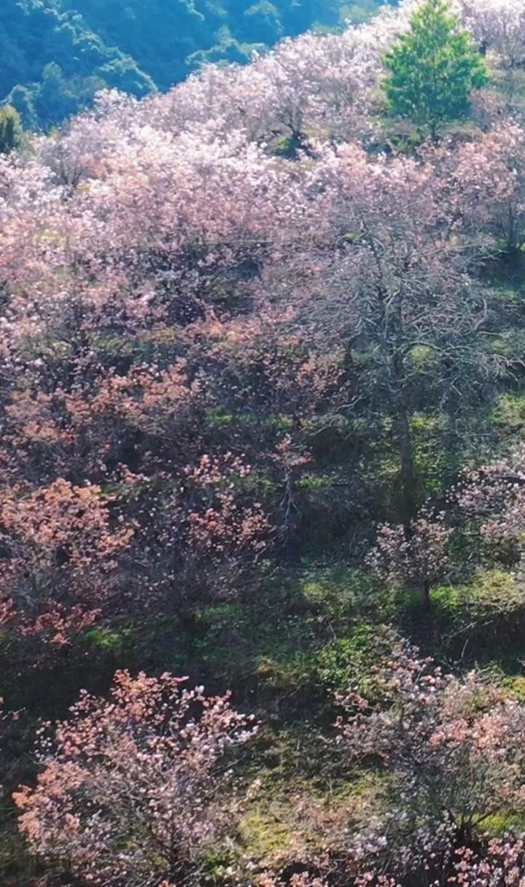
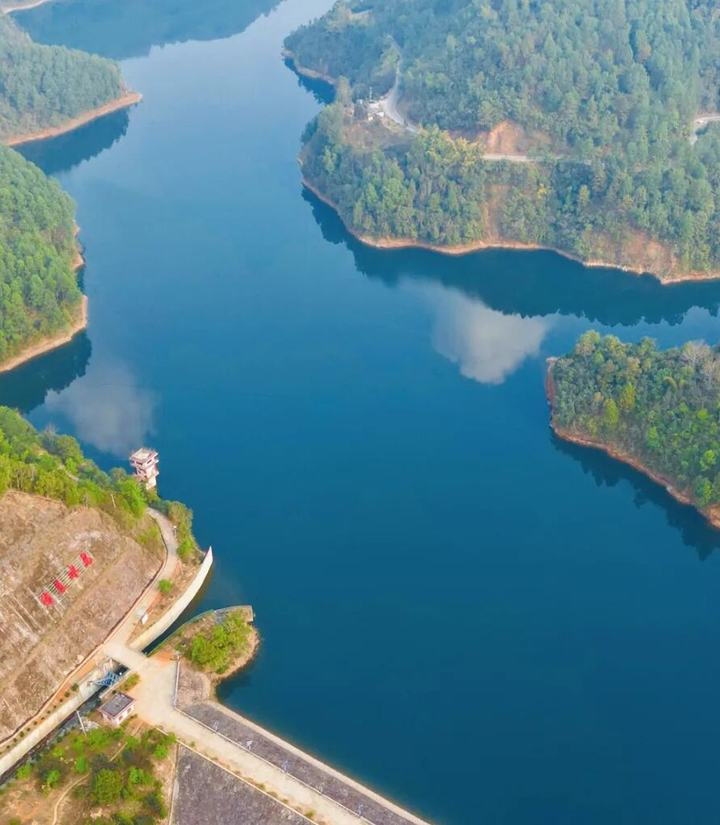

四季山水
一片适宜全年常住的山水
选址在中国西南地区，这里空气清新，海拔适中（800—1500米），气候温润，四季分明，无极端寒暑，年均温16—20℃。光照充足，适合户外活动，有利于多种蔬菜、果树的自然种植，是全球少有的宜居地带。

冬春 · 百花盛开
低海拔区域冬季仍然温暖如春，满山花海，高山上却是一派北国风光，充分展现出当地巨大的垂直落差带来的丰富自然景观。
点击了解更多 →
晨&夕 · 云海涌动
山谷间云海汹涌，村寨时隐时现，宛若仙境。
点击了解更多 →

各处 · 湖光山色
绿水环抱青山，湖泊清碧如玉，自然馈赠了最朴素的丰盛与宁静。
点击了解更多 →

夏秋 · 森呼吸
原始森林中徒步，空气中富含负氧离子，是最自然的身心疗愈。
点击了解更多 →